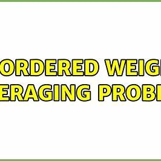

Projects
Fuzzy Optimizer
Framework for fuzzy relation inequality-based decision systems with MCDA support and weighted rules.

Deep License Detector
YOLOv3-based license plate and axle detector with transfer learning and synthetic augmentation.
Backward Compatibility Checker
Python + Bash tool for testing legacy billing modules, automating regression testing in Amdocs.
Client-Server Quality Allocator
Multi-objective optimizer using fuzzy OWA aggregation for distributed QoS allocation.